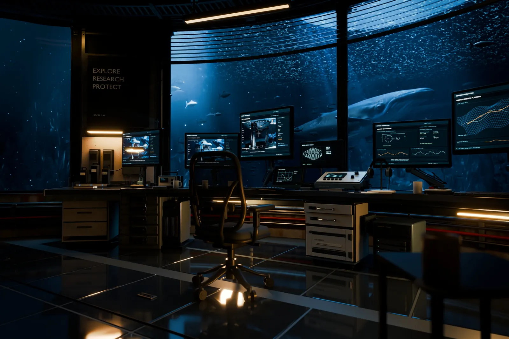
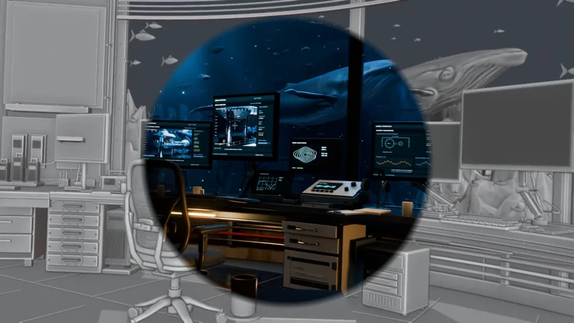
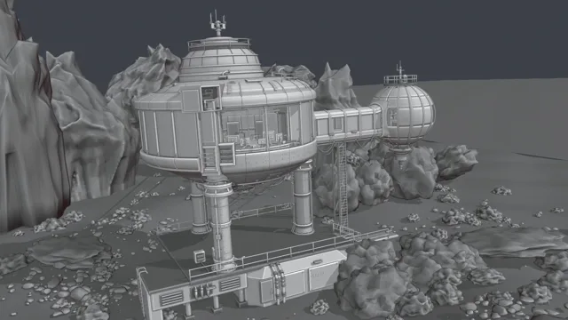
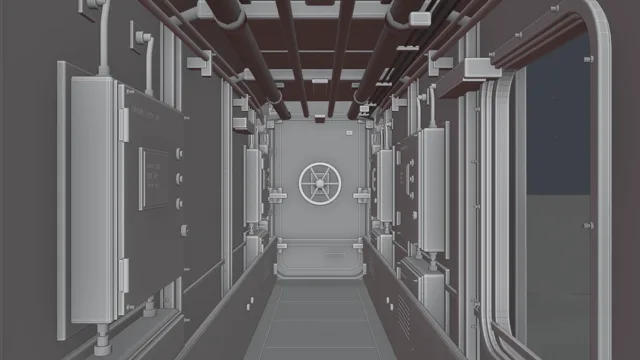
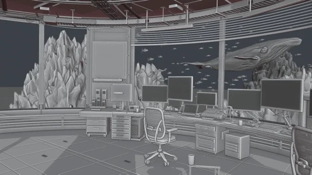
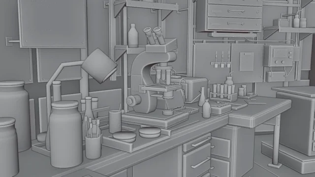
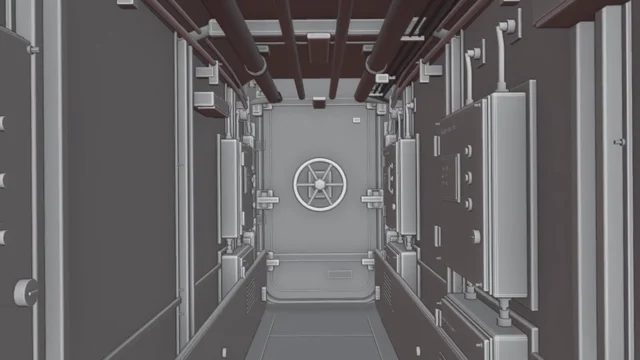
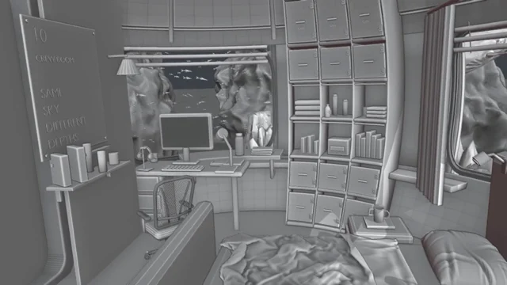
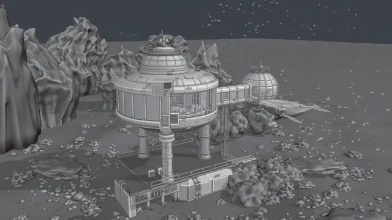
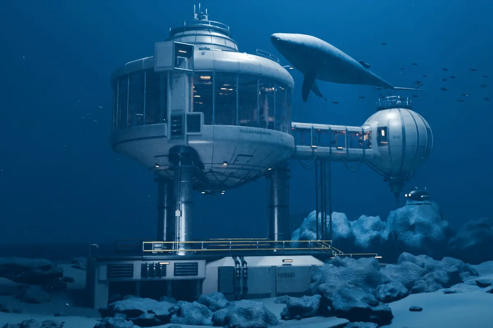

NEREID
DEEP-SEA RESEARCH STATION
NEREID 深海科研站 · 个人项目 · 2026.10
AI-assisted production · 制作流程
把空间与氛围需求，拆成可迭代的制作任务。
拆解场景结构、机位、材质与灯光需求，结合 Claude、Codex 与 Blender 推进 AI 辅助制作，通过多机位对照修订空间关系与画面表现。制作白模到成品的展示动画，调整镜头移动、转场与材质显现的节奏，根据预览逐项处理画面变形、遮挡和衔接问题。
- Claude / Codex · MCP · Blender Python
- 拆解需求，连接制作软件，组织脚本执行与反馈修订
- Blender / Cycles
- 几何、节点材质、水下布光与多机位渲染
- Substance Painter
- 资产贴图与表面细节制作
- Remotion / FFmpeg
- 短片编排、中心显色、视频与音轨核对
- 01 / 拆解
先约定空间关系
把舱室连接、设备支撑、电线走向和镜头可见范围分别列为任务，明确本轮修改与保留的部分。
- 02 / 迭代
用实际画面反馈给 AI
结合多机位预览标出结构和受光问题，辅助调整对象、材质与光源；逐轮确认后再批量输出。
- 03 / 运镜与交付
将镜头卡应用到场景展示
组织 AI 阅读、分析影视相关资料与作品，整理 50 张镜头卡，应用于本项目的构图与运镜设计；检查画面与衔接后，交付 9 个 4K 机位及展示短片。
Interior · 室内与细节
控制室、实验台、通道、卧室和舱体



NEREID · Shot card in practice
中心显色：由白模展开成品。

让材质与灯光的变化可读
NEREID 在同机位画面间由中心展开成品。核对两层帧号、显色起点和边界，保持原有运动与音乐时点。
查看对应镜头卡 ↗NEREID · Full-film shot breakdown
全片运镜：镜头卡怎样组合成一段叙事。
以现有 16.33 秒成片为例，将 11 个镜头段归纳为 7 组，说明观看目的、对应镜头卡，以及三维运动和后期的分工。
- 0100.00–05.00 s

- 0205.00–09.00 s

- 0309.00–10.33 s

- 0410.33–11.33 s

- 0511.33–12.33 s

- 0612.33–13.67 s

- 0713.67–16.33 s

调用思路
先给出已有场景、素材和固定时长 → 按观看目的选卡 → 明确相机、物体动画与后期的职责 → 按音乐时点细化路径和速度 → 回查主体、遮挡与镜头衔接。
时间轴取自当前成片，展示镜头卡在各段画面中的应用。实际时长、速度与组合方式结合空间、主体和原片节奏调整。
查看 NEREID 作品与完整视频 ↗Iteration · 同一机位的迭代



- V12 · 2026.10.08
结构与比例
确定圆形主舱、连接通道和球形副舱的布局，按批注还原外壳部件。
- V15 – V47 · 2026.10.23
光影、海床与整理
逐版加入鲸鱼、水下穿透光束和室内设备，海床岩石分出近、中、远层次；V47 做场景合批和大纲整理。
- V48 · 2026.10.24 · FINAL
做旧与定稿
外壳做旧、岩石受光边缘、室内陈设细化，九个机位一起出 4K 定稿。
How I work
先拆解需求，以 AI 协作推进制作；通过多机位对照检查结果，并保留版本与交付记录。